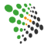
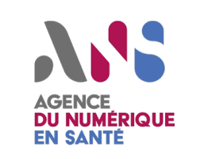
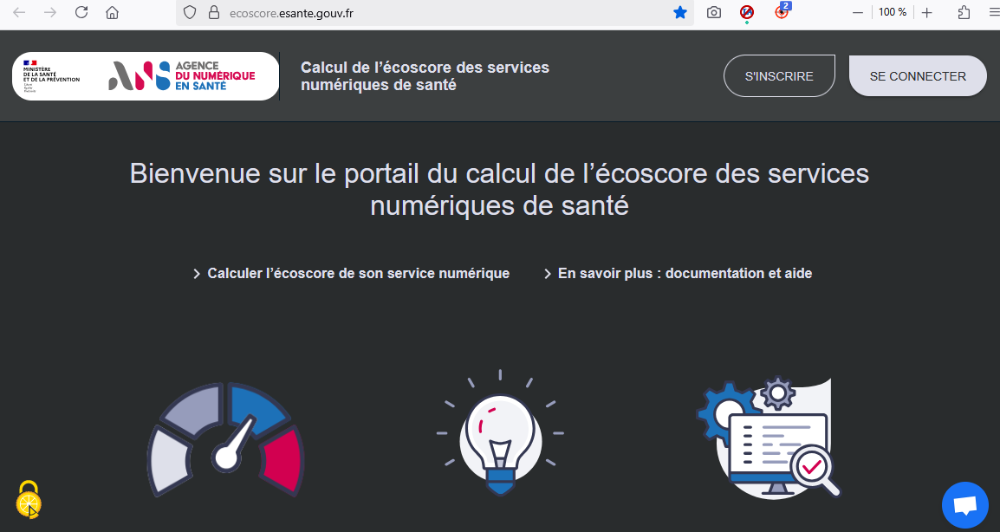
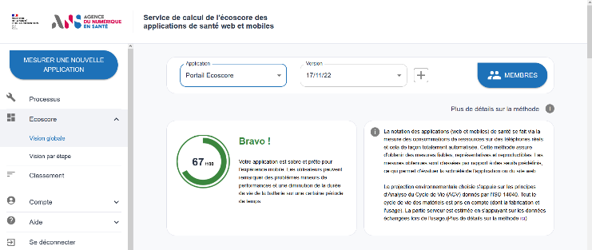
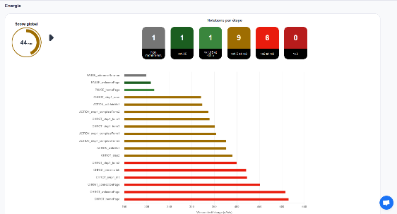

Contexte
Un portail dédié pour évaluer l'impact des applications de santé
Contexte
L'Agence du Numérique en Santé souhaitait disposer d'un portail dédié pour mesurer et projeter l'impact CO₂ des applications web et mobiles de santé.
Cette évaluation est obligatoire pour être référencé sur Mon Espace Santé. Le dispositif concerne deux catégories d'applications :
Le projet devait permettre aux éditeurs de réaliser eux-mêmes leur évaluation, sans formation préalable, tout en garantissant la fiabilité des mesures réalisées.
- les applications générales ;
- les applications de téléconsultation.

Résultats
Plus de 70 éditeurs évalués sur le Portail Écoscore
Résultats
- Évaluation et classement public des éditeurs par l'Agence du Numérique en Santé sur le Portail Écoscore.
- Plus de 70 éditeurs évalués.
- Évaluation réalisée par les éditeurs eux-mêmes, sans formation préalable, grâce à l'interface intuitive de Greenspector Studio.
Clés du succès
Ce qui a fait la différence
Une prise en main autonome
L'interface a été retravaillée avec un tutoriel dédié afin de permettre aux éditeurs de réaliser leur évaluation en toute autonomie.
Des mesures sur terminaux réels
Les mesures réalisées sur terminaux réels ont convaincu l'ANS de la fiabilité de l'approche Greenspector.
Un portail dédié en marque blanche
Un portail dédié en marque blanche a été mis en place pour restituer les résultats et faciliter leur consultation.
Des tests adaptés à la téléconsultation
Les tests de téléconsultation se déroulent sur deux terminaux en simultané afin de refléter les conditions d'usage réelles.
Témoignage
La parole à Dr Brigitte Séroussi
« Pour s'assurer de la fiabilité maximale de l'écoscore, les équipes se sont appuyées sur Greenspector, qui permet d'évaluer de façon fiable l'impact environnemental d'une application de santé. »
« Greenspector se base sur la mesure tout au long du parcours de l'usage réel de l'application, plus que sur le simple calcul de l'impact environnemental du chargement de la page d'accueil. »
Visuels
Le projet en images


À vous de jouer
Vous souhaitez mesurer l'impact environnemental de vos applications ?
À vous de jouer